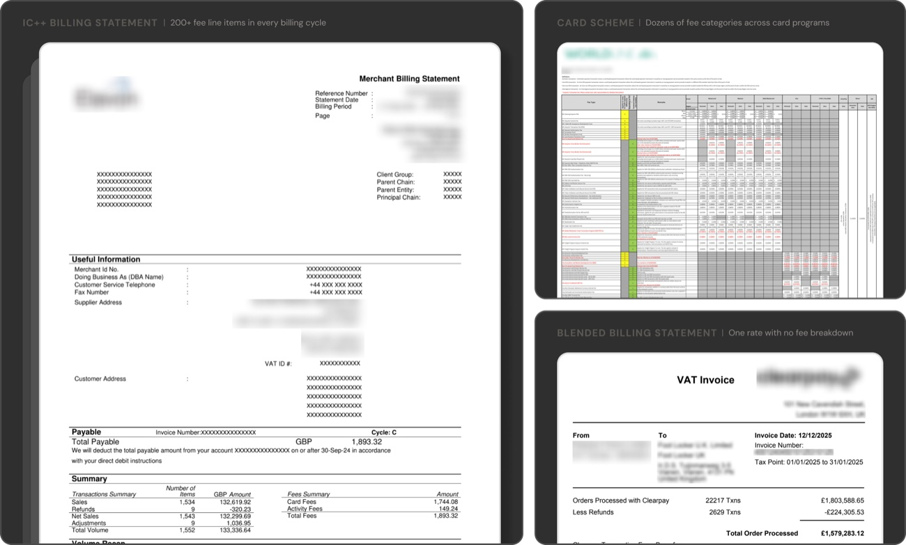
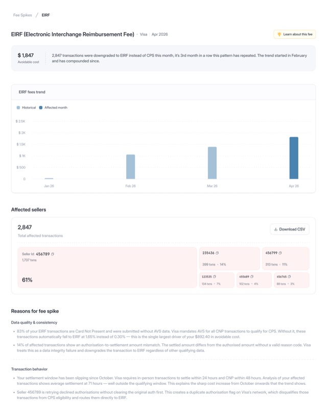
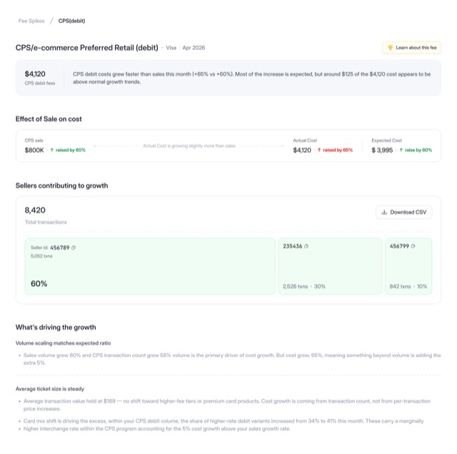
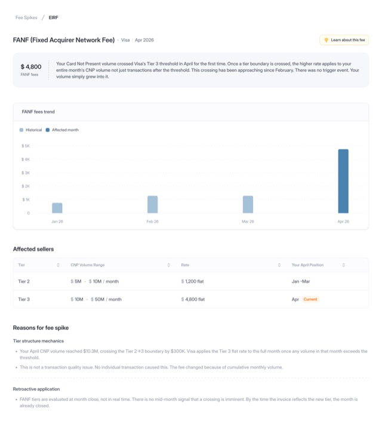

Every time a card payment is triggered, a silent negotiation happens in milliseconds.
Every card payment looks simple from the outside — tap, approve, done. But beneath that tap, invisible decisions determine what the merchant ultimately pays. Card type, settlement timing, data quality — each variable quietly shifts the fee tier. Most merchants never see this happen.
Most enterprises on IC++ pricing consistently pay more than they should. The gap between what they should pay and what they actually pay sits at 7–10% of total payment costs. The system wasn't built to be readable — it was designed to settle transactions silently.
IC++ fee structure — what a merchant actually pays per transaction
Interchange·~1.5–2.0%
Goes to the issuing bank. Set by Visa / Mastercard. Largest component — varies across 100+ programs depending on merchant type, card type, and 7–10 qualifying criteria per transaction.
VARIES BY: card type · method · data quality
Scheme Fees·~0.2%
50+ categories — mandatory, international, feature-driven, and penalty fees. A single transaction can incur 3 to 10 of these simultaneously. Rules are updated twice a year in 900-page network rulebooks.
VARIES BY: card origin · transaction type
Processor Markup·~0.3%
The PSP or acquirer's margin. Usually negotiated upfront — the most transparent layer. But when a merchant has multiple PSPs, even this becomes hard to reconcile across different report formats.
NEGOTIATED: at contract time
Total effective rate
What the merchant pays per transaction
1.7–2.8%
The downgrade problem
When a transaction doesn't meet the conditions for a preferred interchange tier, it's automatically bumped to a higher rate. No alert. No explanation. Just a larger bill at month end.
This was the context we walked into. No existing product in this space. No shared vocabulary. Opaque systems. Fragmented data. No clear mental model. Before we could design the product, we had to decode the ecosystem itself — we had to build the mental model by understanding the domain.
/02 This is where Hypersense begins
We built the intelligence layer that payment data never had.
Every payment leaves behind signals. But those signals are scattered across processor statements, settlement reports, and transaction logs — fragmented, inconsistently labelled, and impossible to connect at scale.
The system was never designed to explain costs. It was designed to settle transactions — silently, instantly, and at scale. So when costs drifted or margins leaked, merchants rarely knew why.
Hypersense connects transaction behaviour to financial impact, making payment costs observable, easily. Teams can finally trace every downgrade back to its source, detect abnormal cost spikes before they become quarterly surprises, and understand exactly where fees originated — issuer, network, or PSP — down to the transaction level.
What We Built
We designed an interconnected system of workflows — each helping payment operations teams answer a different layer of the cost problem.
What changed?
Why did it happen?
What's driving cost leakage?
What should we fix first?
What is the projected impact?
What We Achieved
6 enterprise pilots secured, including a live demo with Apple.
Merchants moved from static demos to testing with real transaction cost data.
/03 My Role
One designer. A team of seven. Building inside ambiguity.
The team — 7 people, one shared hypothesis
Design
Solo Product Designer
Research, IA, interaction, visual system, component spec. Greenfield — no system to inherit.
:) That's me
Engineering
2 × Backend Engineers
Built the intelligence infrastructure powering classification, root-cause analysis, anomaly detection, & transaction-level cost tracing.
Product + Growth
1 × PM · 1 × BD Lead · 1 × Growth
Product strategy, enterprise discovery, GTM experiments, and customer conversations shaping early product direction.
Designed the pipelines and decisioning systems behind cost classification, downgrade detection, and transaction-level analysis.
I was the solo designer on the team. The domain was unfamiliar, the users were sceptical, and the product was evolving in real time — sometimes being discovered in the same room where it was being pitched.
My role wasn't just designing interfaces. It was shaping how the system would ultimately be understood. Every workflow had to reduce ambiguity, explain discrepancies, and make complex cost behaviour feel trustworthy.
The hardest part wasn't handling complexity.
It was deciding what deserved clarity.
My role was to continuously bridge the gap between how payment systems behave internally, and how operational teams reason about them externally.
/04 Understanding the terrain
The industry's most transparent pricing model is also its most complex.
IC++ pricing was designed for large-scale merchants processing enough volume to benefit from true pass-through pricing.
Instead of paying a single blended rate, merchants are charged the actual cost of processing each transaction. That cost varies based on factors such as card type, authentication method, settlement timing, data quality, and geography.
For high-volume merchants, this model often results in lower costs compared to blended pricing. But those savings come with complexity.
IC++ exposes every component of cost, giving merchants full visibility into interchange, scheme fees, and processor markup. However, understanding what was charged and why requires reconciling fragmented data spread across multiple reports that arrive in their inbox at the end of each billing cycle.
The raw documents
Every month, a different set of documents. No common format. No shared language.
The exact reports vary by processor and pricing model, but the challenge is always the same: each source explains only part of the cost story.
Teams manually reconcile invoices, settlement files, and network rate tables to understand what they were charged and why.

IC++ statement · scheme report · blended statement — three formats, one cost story
IC++ fee simulation — select a card type, then run the transaction
$1,000.00
—
—
The cost of invisibility
A transaction expected to qualify for a lower interchange rate like 1.5% could silently downgrade & ends up 2.4% because of something as small as delayed settlement, missing authentication, or incorrect merchant classification.
For an enterprise merchant processing $500 million, this is millions slipping through the cracks of every billing cycle, every quarter, every year.
Downgrade reasons are in the dozens: missing AVS data, late settlement, missing CVV, batch timing errors, incorrect MCC classification, EMV chip fallback routing. For each reason, there's a corresponding cost. And a corresponding fix. Neither is visible without something that can read the data, trace the cause, and surface it in plain language.
$200B+Spent annually by merchants across the U.S. and Europe to accept card payments — with significant opportunity to reduce avoidable costs.
500+Interchange rate categories and qualification rules across Visa and Mastercard.
3–5 daysAverage time finance teams spend reconciling monthly PSP fee reports. Often without a clear explanation of where costs changed.
/05 Where This Problem Exists
Why only certain markets?
The challenge of understanding and optimising payment costs exists primarily in markets, where merchants are directly exposed to interchange and scheme fees for every transaction.
In India, domestic payments run largely on UPI, where transaction costs are close to zero. In much of Southeast Asia and Latin America, merchants often pay flat or blended rates that hide underlying fee complexity.
The downgrade problem primarily emerges in markets where interchange-based pricing is passed directly to merchants, such as the United States, Europe etc.
Markets where IC++ pricing applies — drag to rotate, hover a country for context
IC++ markets
Simplified pricing
drag the globe — hover any country
/06 Users
Three users. One blind spot. Different stakes.
Although payment cost is a shared business concern, the problem surfaced differently for each stakeholder. Through research, three primary user groups emerged — each responsible for a different part of the cost story.
The Payment Analyst –Owns the monthly fee audit.
Every month, processor invoices arrive with hundreds of opaque line items that need to be reconciled and explained.
01
The invoice arrives
114 line items. Costs up 18%. One row reads EIRF Downgrade — $47,219. No transaction IDs, no reason codes, no explanation.
02
The manual hunt
She cross-references invoice exports and processor dashboards. Hours of filtering. She knows the amount — but not the cause.
03
Hypersense surfaces the root cause
Fee Spikes traces the $47K increase to card-not-present transactions processed without 3DS2 — causing them to downgrade to EIRF.
04
Dispute filed. Fix documented.
She exports transaction-level evidence, files the dispute, and shares the required technical fix — 3DS2 on CNP — with the payments team.
Job to be done
Identify which charges are incorrect, understand why fees increased, and prepare a dispute before the billing window closes.
Pain
48-page invoice. One line item. No explanation. "EIRF Downgrade — $47,219." A large charge with no transaction trail, no reason code, and no explanation.
The Treasury / Finance Lead –Owns forecasting and budget accountability.
Payment costs are one of the largest variable expenses in the business, often representing 1.5–2.2% of revenue. When costs move, finance is expected to explain why.
01
Board prep
Payment cost rises from 1.61% to 1.82% of revenue. A 13% relative increase on $40M. The CFO will ask why.
02
Invoice archaeology
He compares three months of invoices. Costs are higher, but he can't tell how much came from growth, rate changes, or avoidable issues.
03
Hypersense separates the signal
Variance analysis shows the increase broke down: volume growth, a Mastercard rate update, and a smaller set of avoidable fee spikes.
04
Forecast built in
Upcoming network changes are projected forward. He incorporates a Visa rate change into Q4 guidance before the quarter begins.
Job to be done
Understand where payment costs are heading, forecast their impact, and distinguish between expected growth, processor errors, and upcoming network changes.
Pain
Costs went up. The invoice arrived after the month closed.
The Payment Operations Head –Owns the operational decisions that influence payment costs.
Routing logic, authentication settings, and data quality directly affect interchange qualification, but the cost impact of these decisions is rarely visible in real time.
01
A new flow goes live
The team ships a redesigned web checkout. Conversion improves, and no cost issues are visible at launch.
02
The cost appears later
Two billing cycles later, interchange on mobile transactions is up 22%. No other variables changed. Can't trace without processor exports that don't map to the new flow.
03
Hypersense traces the impact
Fee Spikes links the increase to missing Level 2 data in the new flow, which caused transactions to downgrade for eight weeks.
04
Fix deployed. Guardrail added.
Engineering restores the missing Level 2 field. Costs normalise within the next billing cycle. A cost-qualification check is added permanently to the release checklist.
Job to be done
Identify which operational decisions are causing downgrades and get feedback quickly enough to take corrective action.
Pain
"We changed routing in May. The cost impact showed up two billing cycles later."
/07 Design Challenge
Four tensions that shaped every design decision.
Payment cost data is dense, technical, and inherently difficult to trust. Every design decision had to help users move from interpretation to confidence to action.
Making complex cost data trustworthy
Payment cost data is dense, technical, and often opaque. Before users act on it, they need to trust what they're seeing.
The challenge wasn't just clarity, it was credibility through design. How do you present complex, multi-layered financial data in a way that feels reliable enough for teams to make real operational decisions on?
Design Challenge
Create interfaces that move users from interpretation → confidence → action, without requiring a second source to validate the data.
One interface for fundamentally different pricing models
IC++ exposes a detailed breakdown of interchange, scheme fees, and processor markups. Blended pricing compresses all of that into a single effective rate.
These aren't just different pricing models. They represent fundamentally different levels of visibility.
Design Challenge
Create a unified experience that adapts to both granular IC++ data and simplified blended pricing.
Distinguishing actionable costs from expected ones
Not every increase in payment cost is a problem. Some are expected. Some are strategic. Some require immediate attention.
The same number can mean "nothing to do" or "fix this today."
Design Challenge
Help users distinguish normal cost movement from preventable leakage that requires action.
Balancing different user depths on the same surface
Finance leaders need a clear cost story in seconds. Analysts need transaction-level detail to investigate root causes.
Both users start from the same interface, but arrive with very different goals.
Design Challenge
Deliver executive clarity at a glance and transaction-level depth on demand.
/08 Product Strategy and Design
The principles that shaped every decision.
IC++ pricing is layered, contextual, and difficult to reason about. Simplifying it by hiding detail would only obscure the truth. Our goal was not to reduce complexity, but to shape it into clarity.
We anchored the entire product around a simple principle:
Every screen should answer the next question the user naturally arrives at.
The product was structured to mirror how payment teams naturally investigate cost — moving from understanding what changed, to identifying why it happened, to deciding what to do next.
hover to explore connections
Every node represented a question payment teams needed answered. HyperSense connected those questions into a single coherent narrative.
/09 UI Design
Overview — What's my cost story at a glance?
Payment cost data is fragmented across processors, pricing models, and invoice structures. Before teams can investigate anomalies or optimise fees, they first need a clear understanding of where they stand.
Our goal was to design a unified overview experience that could accommodate fundamentally different merchant realities:
Single Processor and multi-PSP setups
IC++ and blended pricing models, that give fundamentally different levels of fee visibility
Growing operational complexity as merchants scaled
The Solution
We built the Overview as a normalisation layer that consolidates all cost signals into a single, coherent snapshot, answering three essential questions:
What am I paying?
What is driving those costs?
Where should I investigate next?
Multiple Processors · IC++ only — granular fee category breakdown per processor
Regardless of how a merchant's payment stack was structured, the experience adapted to their data reality while preserving the same mental model.
Drill-Down — How is cost distributed across my business?
The Overview answered what the cost story looks like at a glance. Drill-Down answered the next question analysts naturally ask.
For payment analysts, understanding total cost is only the starting point. To identify where inefficiencies are concentrated, they need to break costs across the dimensions that shape them — processors, regions, corridors, fee types, currencies.
Our goal was to create a flexible analytical workspace that let users explore cost across multiple dimensions without overwhelming them with raw data or constraining them to rigid analysis paths.
The Solution
We designed Drill-Down as a focused analytical workspace for decomposing payment cost. It helped analysts answer questions such as:
Which processor is driving costs?
Which regions are increasing spend?
Which fee categories changed most?
Built primarily for IC++ pricing, the module separated drillable costs from blended fees, taxes, and other non-attributable charges — making the analytical scope explicit and reinforcing trust in the numbers.
hyperswitch.io/cost-observability/drill-down
Drill-Down — a focused workspace for decomposing cost across every dimension that shapes it
Fee Spikes — Turning unexpected cost increases into actionable signals
Payment costs can rise for many reasons: healthy sales growth, recurring downgrades, shifts in card mix, or expansion into new markets.
Our goal was to help teams quickly determine whether a spike was expected or required action — distinguishing actionable anomalies from normal business movement, and guiding users from detection to root cause without spreadsheets or invoices.
Fee Spikes became the anomaly intelligence layer of Hypersense — built to answer:
What caused the spike?
Is this expected or avoidable?
Which fees changed unexpectedly?
Is this growth, leakage, or penalties?
This framing helped teams immediately understand whether they were looking at normal growth or preventable leakage.
hyperswitch.io/cost-observability/fee-spikes
Fee Spikes — from a detected anomaly to a plain-language root cause, without spreadsheets
Three scenarios. Three distinct cost stories.

Downgrades & Penalties
Quarterly Shock
2,847 transactions were downgraded to EIRF, creating $1,847 in avoidable cost over three consecutive months.

Organic Growth
False Alarm
Costs rose 65% while sales grew 60% — the increase was largely explained by healthy business growth.

Non-Transactional Fees
Tier Jump
CNP volume crossed Visa's Tier 3 threshold, increasing FANF from $1,200 to $4,800 for the month.
Audit — Verifying every fee charged
Processor invoices show what was charged — but not whether those charges were correct.
A line item like "CPS Retail" or "EIRF" offers little insight into whether the right rate was applied, which transactions were downgraded, or how much the discrepancy cost.
The question Audit answered was: Did we pay what we were supposed to pay?
The Design Challenge
Audit had to reconcile three layers of information simultaneously:
Contracted vs applied rates
Expected vs actual costs
Fee variance and financial impact
Transaction-level evidence
The Solution
We designed Audit as a structured verification workflow that progressively moves users from summary to evidence — answering four critical questions:
What should I have been charged?
Which fees appear incorrect?
How large is the variance?
Which transactions caused it?
Each layer revealed more detail only when needed — from total overcharges, down to fee categories, card programs, and transaction-level evidence. Audit turned opaque invoices into a clear, defensible audit trail.
hyperswitch.io/cost-observability/audit
Audit — progressively moving from summary to evidence: did we pay what we were supposed to pay?
Forecast — Turning network updates into cost foresight
Card networks like Visa and Mastercard regularly introduce new fees, revise existing programs, and change qualification rules. These updates are published weeks in advance — but buried in dense technical documents that are difficult to interpret.
For merchants, the challenge isn't access to the information. It's understanding what will actually affect their business — and how much it will cost.
Without that visibility, most teams only discover the impact after it appears on the next invoice. Our goal was to translate dense network bulletins into a merchant-specific forecast that highlights only the changes relevant to their business.
The Solution
We designed Forecast to model upcoming network changes against each merchant's transaction mix and estimate the financial impact before the changes went live. The experience was structured to answer four progressively deeper questions:
What changes are coming?
Which updates affect us?
What is the projected impact?
What should we prepare for?
Most published network updates are irrelevant to a given merchant. To reduce cognitive overload, Forecast prioritised only the changes that matched the merchant's actual transaction behaviour and surfaced the estimated monthly impact in real currency terms.
hyperswitch.io/cost-observability/network-updates
Forecast — dense network bulletins, translated into a merchant-specific cost forecast
Product iterations — how it evolved to earn trust, one step at a time
V0 — Experiment
Manual cost report
cost_report.xlsx
Goal: get first merchant to share fee data
V1 — MVP
Observe + Audit
v1 dashboard
Goal: enterprise demos
V2 — Pilot
Full platform + AI
v2 platform
Goal: pilot with live data
Active — Now
Optimisation + scale
current
Goal: PSP + acquirer partnerships
From first wireframe to Apple and Spotify — 5 months
Week 1
Product direction set. First wireframes for a cost observability layer. IC++ billing defined as the core domain. Team of seven, no design headcount yet.
Month 2
MVP built. Observe + Audit flows live. First internal demo. Data ingestion pipeline proven against real fee invoices.
Month 3
First merchant shares data. The hardest milestone in a compliance-heavy domain. One merchant trusts the platform enough to connect live transaction feeds.
Month 4
Enterprise demos begin. Wayfair, Apple, Google, Spotify. Strong interest across the board. Compliance and data-trust gap blocking conversion.
Month 5
Apple progresses to live data testing. Spotify pitch deck delivered to payments team. Highest trust threshold reached. Pipeline to acquirers and PSPs opens.
"The product went through multiple iterations specifically to build merchant trust — starting with a simple cost report, progressing to a full self-serve platform. Each iteration earned a little more data access. The design was a trust-building instrument, not just a UI."
Thank you for taking the time to go through this case study. If you'd like to discuss the work or the thinking behind it, I'd love to connect.